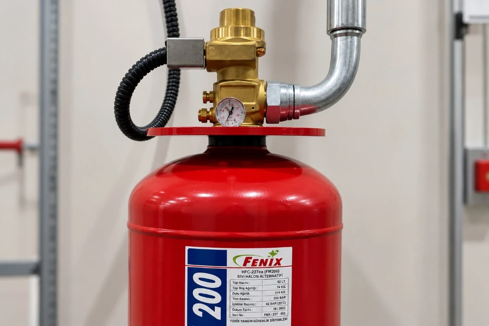

FM-200 Gazı Nedir? İçeriği ve Yangın Söndürme Sistemlerindeki Kullanımı
FM-200, yangın söndürme sistemlerinde kullanılan gazlı söndürme ajanlarından biridir. Kimyasal olarak HFC-227ea olarak tanımlanan FM-200, özellikle suyun veya köpüğün tercih edilmediği, ekipmanların yangından korunmasının kritik olduğu kapalı hacimlerde kullanılan çözümler arasında yer alır.
FM-200 sistemlerinin temel amacı, yangının gelişmesini kontrol altına almak için tasarlanmış söndürme ajanını korunan hacme uygun mühendislik hesabıyla uygulamaktır. Bu nedenle yalnızca söndürme gazının seçilmesi yeterli değildir; korunan hacmin özellikleri, ekipman yerleşimi, nozullar, borulama, algılama ve kontrol sistemi birlikte değerlendirilmelidir.

FM-200 Gazı Nedir?
FM-200, yangın söndürme sistemlerinde kullanılan gazlı söndürme ajanlarından biridir. Kimyasal olarak HFC-227ea (heptafluoropropane) formülasyonuyla tanımlanan FM-200, özellikle suyun, köpüğün veya kuru kimyevi tozun tercih edilmediği, ekipmanların yangından korunmasının kritik olduğu kapalı hacimlerde uygulanan çözümler arasında yer alır.
FM-200 sistemlerinin temel amacı, yangının gelişmesini kontrol altına almak için tasarlanmış söndürme ajanını korunan hacme uygun mühendislik hesabıyla uygulamaktır. Temiz gaz sınıfında bulunan bu ajan, alev yüzeyindeki ısı enerjisini fiziksel ve kimyasal düzeyde absorbe ederek yangını durdurur; ortamda nem veya kalıntı bırakmaz.
Bu nedenle yalnızca söndürme gazının seçilmesi yeterli değildir. Korunan hacmin özellikleri, ekipman yerleşimi, nozullar, borulama, algılama ve kontrol sistemi birlikte değerlendirilmelidir.
FM-200 Gazının İçeriği
FM-200, HFC-227ea kimyasal adıyla bilinen bir halokarbon söndürme ajanıdır. Bileşiminde karbon, flor ve hidrojen atomları (CF₃-CHF-CF₃) yer alır. Renksiz ve kokusuz bir gaz olan FM-200, normal depolama koşullarında çelik silindirlerde sıvı fazda muhafaza edilir ve azot (N₂) gazı ile basınçlandırılarak bekletilir.
Gazlı yangın söndürme sistemlerinde kullanılan ajanların özellikleri, sistem tasarımının önemli bir parçasıdır. FM-200 de bu kapsamda özellikle elektronik ekipmanların bulunduğu ve suyla müdahalenin ikincil hasar oluşturabileceği alanlarda değerlendirilebilir.
FM-200'ün kullanılacağı sistemde gaz miktarı, korunan hacim ve tasarım kriterleri dikkate alınarak mühendislik hesabıyla belirlenmelidir. Mahalin net hava hacmi, ortam sıcaklığı, rakım ve koruma sınıfı doğrultusunda gaz konsantrasyonu uluslararası standartlara göre optimize edilir.
FM-200 Yangın Söndürme Sistemi Nasıl Çalışır?
FM-200 sistemi, yangının algılanmasından söndürme ajanının kontrollü şekilde boşaltılmasına kadar birbiriyle bağlantılı çalışan bileşenlerden oluşur. Sistem tek başına bir depolama tüpü değil; sensörlerden kontrol paneline, aktüatörlerden nozullara kadar entegre bir mühendislik zinciridir.
Genel çalışma süreci şu adımlardan oluşur:
- Sürekli İzleme ve Algılama: Yangın algılama sistemi ortamı optik duman, ısı veya hava çekmeli (VESDA) dedektör hatları vasıtasıyla sürekli izler.
- Kontrol Paneli Yönetimi: Yangın senaryosuna göre kontrol paneli alarmı tetikler, sesli/ışıklı uyarıları devreye sokar ve söndürme sürecini yönetir.
- Güvenlik ve Doğrulama Adımları: İki bağımsız algılama hattının teyit vermesi (cross-zone mantığı) ve gerekli tahliye geri sayımının tamamlanmasının ardından söndürme sistemi devreye alınır.
- Gazın Boru Hattına Boşalması: Kontrol panelinden gelen elektriksel sinyalle silindir vanası açılır; FM-200, tüp veya tüp grubundan yüksek basınçlı borulama sistemi aracılığıyla korunan hacme yönlendirilir.
- Homojen Koruma Konsantrasyonu: Söndürme ajanının özel olarak kalibre edilmiş boşaltma nozulları vasıtasıyla korunan hacimde homojen dağılması ve gerekli tasarım koşullarını sağlaması hedeflenir.
Önemli Mühendislik Notu: Gazlı yangın söndürme sistemlerinde gaz miktarı, boru çapları, nozul basınçları ve deşarj süresi; mahalin geometrisine, sızdırmazlık düzeyine ve hidrolik hesap sonuçlarına göre belirlenir. Bütün projelere uygulanabilecek tek ve sabit bir rakam vermek teknik açıdan doğru değildir.
FM-200 Nerelerde Kullanılır?
FM-200, özellikle yangın sırasında ekipman kaybının ve söndürme sonrası oluşabilecek ikincil hasarın önemli olduğu kapalı alanlarda değerlendirilebilir. Su veya toz ile müdahalenin cihazları kalıcı olarak devre dışı bırakacağı mahallerde temiz gaz çözümleri öne çıkar.
Fenix Yangın olarak sahada sıklıkla projelendirdiğimiz başlıca uygulama alanları:
- Veri Merkezleri: Kritik veri depolama üniteleri, sunucu kabinet sıraları ve network altyapılarında yangın riskine karşı kesintisiz koruma sağlar.
- Sunucu Odaları: Şirketlerin IT operasyonlarının yürütüldüğü, nem ve su damlacıklarına karşı hassas olan bilgi işlem odalarında ekipman güvenliğini teminat altına alır.
- UPS Odaları: Kesintisiz güç kaynakları, redresörler ve akü gruplarında aşırı yüklenme veya kısa devre kaynaklı yangınları hızla kontrol eder.
- Elektrik ve Kontrol Odaları / Pano İçi: Alçak gerilim / orta gerilim dağıtım panoları, kompanzasyon ve otomasyon panellerinde lokal veya hacimsel söndürme kurgularında kullanılır.
- Arşiv ve Hassas Ekipman Alanları: Değerli kütüphane koleksiyonları, tarihi evrak arşivleri, müzeler ve hassas laboratuvar ölçüm odalarında dokümanlara ve cihazlara zarar vermeden yangını durdurur.
FM-200 Sisteminde Mühendislik Neden Önemlidir?
Gazlı yangın söndürme sistemlerinde doğru sonuç yalnızca kullanılan gazın markasına veya adına bağlı değildir. Söndürme gazının doğru miktarda depolanması kadar, yangın anında korunan hacimde yeterli süre boyunca tutunabilmesi de hayati bir şarttır.
Hacim hesabı, korunan alanın yapısı, kaçak noktaları, borulama, nozullar, tüp yerleşimi, algılama sistemi ve kontrol senaryosu birlikte değerlendirilmelidir. Özellikle gazlı söndürme sistemlerinde korunan hacmin fiziksel özellikleri sistem tasarımını doğrudan etkileyebilir.
Uygulama öncesinde Fenix Yangın mühendislerince yürütülen kritik süreçler şunlardır:
- Korunan Hacmin Belirlenmesi: Odanın mimari boyutları, yükseltilmiş döşeme ve asma tavan aralıkları da dahil edilerek net hava hacmi tespit edilir.
- Hacim ve Tasarım Kriterlerinin Değerlendirilmesi: Mahalin yapısal sızdırmazlık durumu incelenir ve gazın kaçmasını önlemek için oda sızdırmazlık testi (door fan testi) kriterleri belirlenir.
- Söndürme Ajanı Seçimi ve Konsantrasyon Hesabı: Korunan mahaldeki yakıt türüne göre gazlı yangın söndürme hesaplama yazılımları ile gereken gaz kütlesi hesaplanır.
- Tüp ve Ekipman Yerleşimi: Silindirlerin ağırlığı, sabitleme kelepçeleri, manifold hattı ve montaj alanı statik kurallara göre kurgulanır.
- Borulama ve Nozzle Tasarımı: İki fazlı akış dinamiklerine göre boru çapları, branşmanlar ve nozul püskürtme paternleri projelendirilir.
- Yangın Algılama ve Kontrol Senaryosu: Yangın algılama ve ihbar sistemleri ile havalandırma damperleri, klima santralleri ve kapı tutucular entegre edilir.
- Sistem Uygulama ve Devreye Alma Süreçleri: Tüm mekanik ve elektriksel bağlantılar tamamlandıktan sonra fonksiyonel kontroller yapılır. Projelendirme aşamasında uzman desteği almak için yangın danışmanlığı hizmetimizden faydalanabilirsiniz.
FM-200 ile Her Yangın Söndürülebilir mi?
Hayır.
Bir söndürme ajanının seçimi yangının türüne, korunacak ekipmana, ortamın özelliklerine ve ilgili sistem tasarım kriterlerine göre yapılmalıdır. Yangın güvenlik mühendisliğinde "her durum için mutlak en iyi tek çözüm" anlayışı geçerli değildir.
Bazı projelerde FM-200 uygun bir seçenek olabilirken, başka bir projede farklı bir gazlı söndürme teknolojisinin değerlendirilmesi gerekebilir. Örneğin ortam hacmi, havalandırma rejimi, çevre politikaları veya mahalde çalışan personelin bulunma durumu farklı alternatifleri gerektirebilir.
Özellikle temiz gaz uygulamalarında sıklıkla karşılaştırılan FM-200 ile Novec 1230 Gazlı Yangın Söndürme Sistemleri arasında seçim yapılırken yalnızca gazın adı değil; korunan alan, ekipman hassasiyeti, küresel ısınma potansiyeli (GWP), tasarım koşulları, proje bütçesi ve standart gereksinimleri birlikte değerlendirilmelidir.
FM-200 Sisteminin Bakımı Neden Önemlidir?
Bir gazlı yangın söndürme sistemi kurulduktan sonra bakım sürecinin devam ettirilmesi gerekir. Yangın koruma sistemleri yıllarca bekleme modunda kalabilen ancak acil bir durumda hatasız çalışması gereken kritik güvenlik altyapılarıdır.
Sistemin güvenilirliğini koruması için şu bileşenler periyodik bakım prosedürlerine göre kontrol edilmelidir:
- Algılama Ekipmanları: Duman dedektörlerinin optik hücre temizliği, duman testleri ve kablo hatlarının sürekliliği.
- Kontrol Paneli: Akü şarj düzeyleri, alarm röleleri, siren hatları ve LCD panel göstergelerinin doğrulanması.
- Söndürme Sistemi Bileşenleri: Solenoid tetikleme mekanizmaları, manuel acil boşaltma butonları ve mekanik kilitler.
- Tüpler ve Bağlantılar: Silindir basınç manometreleri, pilot hortumları, çekvalfler ve gaz tartım kontrolleri.
- Borulama ve Nozullar: Boru sabitleme askıları, korozyon izleri ve nozul ağızlarının açık olduğunun teyidi.
- Alarm ve Kontrol Senaryosu: Söndürme esnasında yangın damperlerinin kapanması ve klima santrallerinin kesilmesi senaryosunun testi.
Sistem bileşenlerinin periyodik muayenesi ve sızdırmazlık testleri hakkında detaylı bilgi için FM-200 Gazlı Söndürme Sistemi Bakımı sayfamızı inceleyebilirsiniz.
FM-200 Yangın Söndürme Sistemi Seçerken Nelere Dikkat Edilmeli?
Tesisiniz için doğru gazlı söndürme kurgusunu belirlerken aşağıdaki temel kriterlerin titizlikle analiz edilmesi gerekir:
Korunan Hacim
Odanın toplam geometrik hacmi, duvar ve tavan yapısı, havalandırma menfezleri ve oda sızdırmazlığı tam olarak hesaplanmalıdır. Sızdırmazlık zafiyeti olan mahallerde gaz istenen süre boyunca tutunamaz.
Yangın Riski
Mahalde yer alan elektronik cihazların ısıl yükü, kablo yoğunluğu, enerji hatları ve yangının olası çıkış dinamikleri analiz edilerek en uygun tasarım konsantrasyonu tayin edilir.
Algılama Sistemi
Hızlı ve güvenilir bir algılama altyapısı olmadan gazlı söndürme devreye giremez. Asılsız alarmların engellenmesi için çapraz zon prensibiyle çalışan yüksek hassasiyetli algılama donanımı tercih edilmelidir.
Borulama ve Nozzle Tasarımı
Gazın korunan hacme dengeli ve eşit debide dağılabilmesi için boru güzergahı hidrolik simülasyonla optimize edilmeli, nozullar oda içindeki hiçbir kör nokta bırakmayacak açıyla yerleştirilmelidir.
Tüp ve Ekipman Yerleşimi
Gaz tüpleri mahalin yakınında, güvenli, aşırı sıcaklık değişimlerinden uzak ve bakım teknisyenlerinin rahatça ulaşabileceği bir konuma sabitlenmelidir.
Bakım ve Süreklilik
Sistemin kurulumu tamamlandıktan sonra düzenli kontrol takviminin işletilmesi, tüp basınçlarının izlenmesi ve yetkili mühendislik desteğinin sürekliliği sağlanmalıdır.
FM-200 Hakkında Sık Sorulan Sorular
FM-200 gazı nedir?
FM-200, yangın söndürme sistemlerinde kullanılan ve kimyasal olarak HFC-227ea olarak tanımlanan bir gazlı söndürme ajanıdır.
FM-200 hangi alanlarda kullanılır?
Özellikle elektronik ekipmanların ve kritik altyapının bulunduğu veri merkezleri, sunucu odaları, UPS odaları ve benzeri kapalı hacimlerde proje şartlarına göre değerlendirilebilir.
FM-200 ile Novec 1230 arasındaki fark nedir?
İki sistem farklı söndürme ajanlarına dayanır. Doğru seçim; korunan alan, ekipman, tasarım kriterleri ve proje gereksinimleri değerlendirilerek yapılmalıdır.
FM-200 sistemi bakım gerektirir mi?
Evet. Gazlı yangın söndürme sistemlerinin algılama, kontrol ve söndürme bileşenleri sistemin tasarımına ve uygulanabilir bakım prosedürlerine göre periyodik olarak kontrol edilmelidir.
FM-200 sistemi her projeye uygulanabilir mi?
Hayır. Söndürme sistemi seçimi korunan alanın özellikleri, yangın riski, ekipmanlar ve tasarım kriterleri dikkate alınarak yapılmalıdır.
Fenix Yangın ile FM-200 Sistem Çözümü
FM-200 gibi gazlı yangın söndürme sistemlerinde doğru sonuç, yalnızca ekipman tedarikinden değil, doğru keşif, mühendislik, tasarım, uygulama ve bakım yaklaşımından geçer.
Fenix Yangın; korunacak alanın özelliklerini ve ihtiyaçlarını değerlendirerek uygun yangın söndürme çözümünün belirlenmesine yönelik mühendislik yaklaşımı sunar.
Korunacak alanınız için hangi gazlı yangın söndürme sisteminin uygun olduğunu öğrenmek, hidrolik hesap kriterlerini incelemek ve yerinde keşif planlamak için bizimle iletişime geçebilirsiniz.
Tesisiniz İçin Doğru Gazlı Söndürme Sistemini Belirleyelim
Oda hacmi, yangın riski, ekipman yerleşimi ve mühendislik hesapları için teknik ekibimizle görüşün.